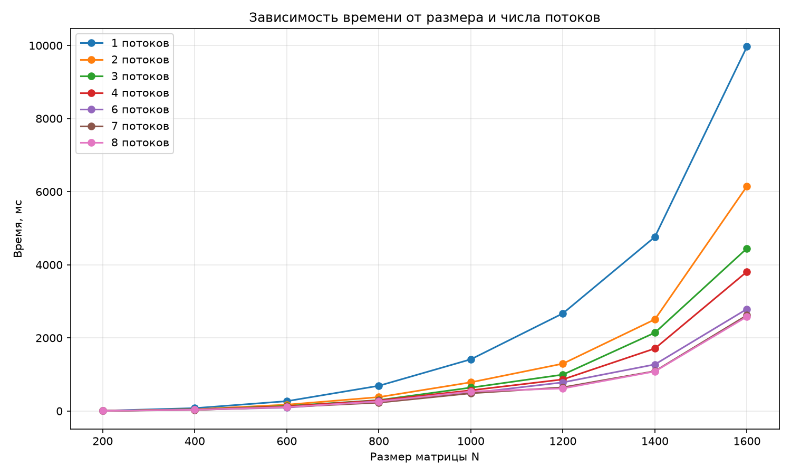
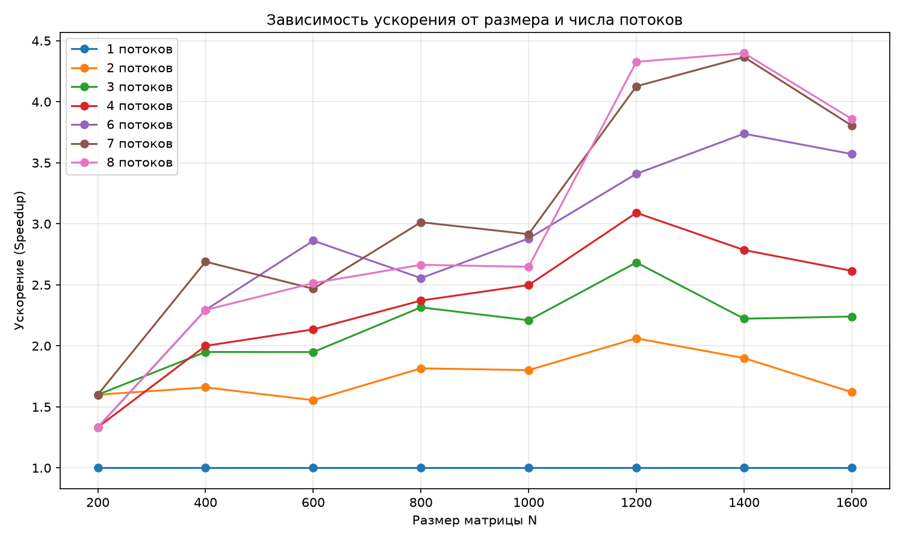
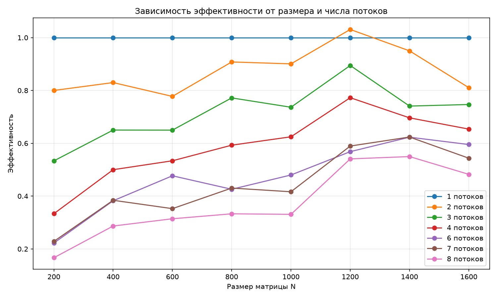

Изучение технологии OpenMP на примере задачи умножения квадратных матриц. Исследование зависимости ускорения от размера задачи и числа потоков.
Время умножения матриц, мс (минимум из 3 запусков)
| N | 1 | 2 | 3 | 4 | 6 | 7 | 8 |
|---|---|---|---|---|---|---|---|
| 200 | 8 | 5 | 5 | 6 | 6 | 5 | 6 |
| 400 | 78 | 47 | 40 | 39 | 34 | 29 | 34 |
| 600 | 269 | 173 | 138 | 126 | 94 | 109 | 107 |
| 800 | 690 | 380 | 298 | 291 | 270 | 229 | 259 |
| 1000 | 1414 | 785 | 640 | 566 | 491 | 485 | 534 |
| 1200 | 2670 | 1295 | 995 | 864 | 783 | 647 | 617 |
| 1400 | 4763 | 2507 | 2143 | 1710 | 1274 | 1091 | 1083 |
| 1600 | 9965 | 6147 | 4448 | 3811 | 2790 | 2619 | 2582 |
Speedup = T(1) / T(N)
| N | 1 | 2 | 3 | 4 | 6 | 7 | 8 |
|---|---|---|---|---|---|---|---|
| 200 | 1.00 | 1.60 | 1.60 | 1.33 | 1.33 | 1.60 | 1.33 |
| 400 | 1.00 | 1.66 | 1.95 | 2.00 | 2.29 | 2.69 | 2.29 |
| 600 | 1.00 | 1.55 | 1.95 | 2.13 | 2.86 | 2.47 | 2.51 |
| 800 | 1.00 | 1.82 | 2.32 | 2.37 | 2.56 | 3.01 | 2.66 |
| 1000 | 1.00 | 1.80 | 2.21 | 2.50 | 2.88 | 2.92 | 2.65 |
| 1200 | 1.00 | 2.06 | 2.68 | 3.09 | 3.41 | 4.13 | 4.33 |
| 1400 | 1.00 | 1.90 | 2.22 | 2.79 | 3.74 | 4.37 | 4.40 |
| 1600 | 1.00 | 1.62 | 2.24 | 2.61 | 3.57 | 3.80 | 3.86 |

Зависимость времени от размера матрицы

Зависимость ускорения от размера матрицы

Зависимость эффективности от размера матрицы
При малых N (200) ускорения почти нет — накладные расходы на создание потоков сопоставимы со временем самой задачи. На N=200 разница между 1 и 8 потоками — меньше 2 мс.
При росте N до 400–600 ускорение достигает 2.3x–2.5x. Потоки начинают окупаться, потому что объём работы растёт быстрее, чем расходы на синхронизацию.
На N=1200–1600 достигается максимальное ускорение — около 4x на 8 потоках. Это меньше 8x, потому что часть работы последовательна (закон Амдала) и есть накладные расходы OpenMP.
На N=1600 заметно небольшое падение ускорения (3.86x) — вероятно, из-за кэш-эффектов и нагрузки на память.
Параллелизм через OpenMP эффективен при N ≥ 400. Максимальное ускорение — около 4x на 8 потоках. Все результаты верифицированы через NumPy (verify.py возвращает OK).